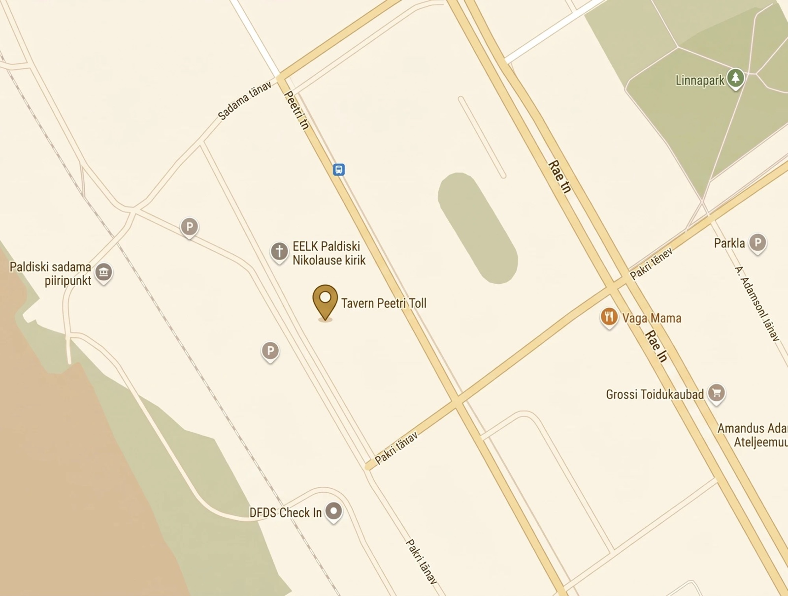

Откройте для себя Палдиски и его историю, посетив Таверну «Петровская Таможня»
Поездку в Палдиски удобно совместить с посещением карьера Румму, монастыря Падизе, замка Фалль и других достопримечательностей Харьюмаа.
- Адрес
- Mere 10, Палдиски 76805, Эстония
- Телефон
- +372 53 423 425
- +372 53 423 425
- info@peetritoll.ee
- Соцсети
- Facebook · TripAdvisor · Foursquare

в живописном парке между двумя церквями